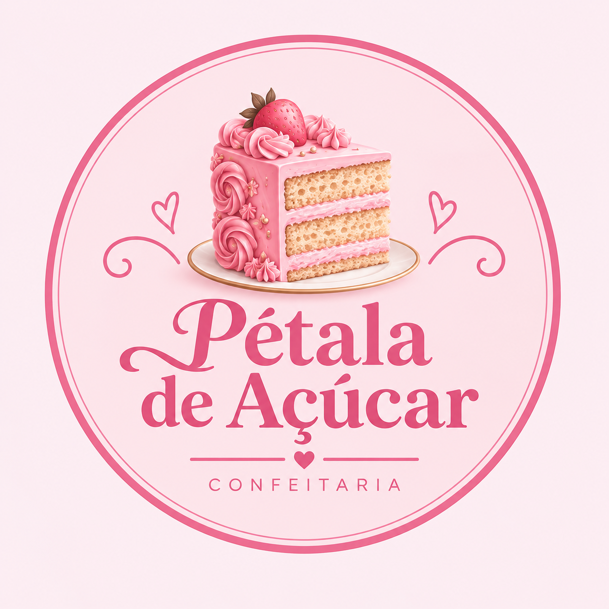
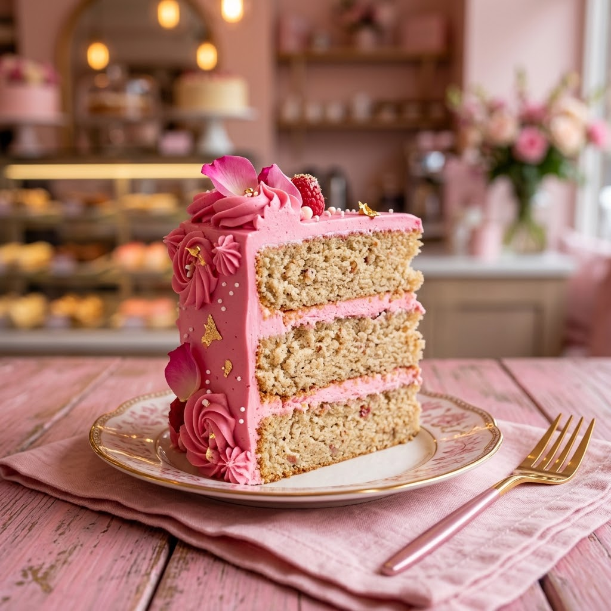
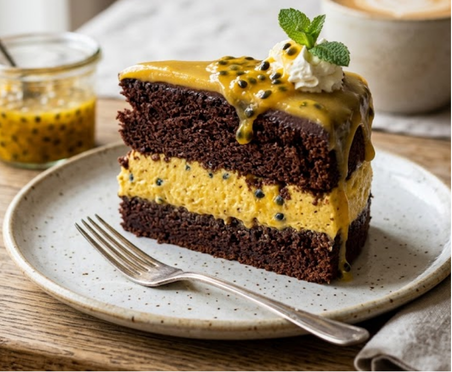
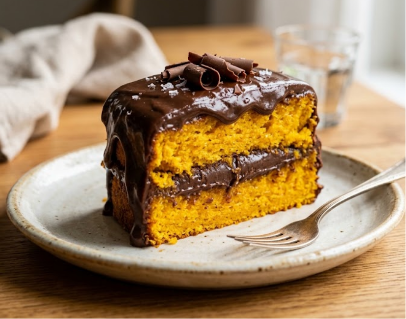
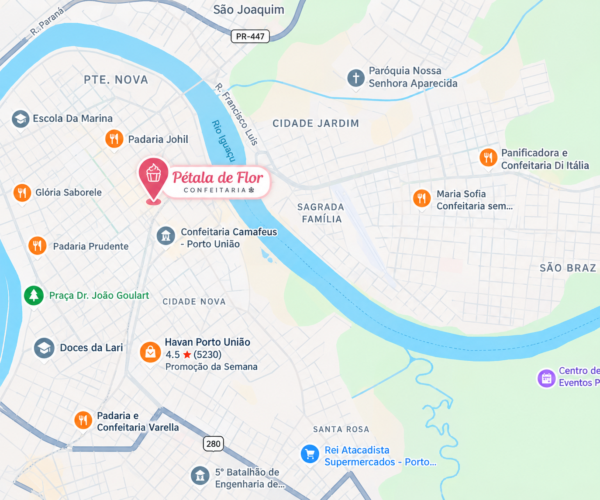

Prepare-se para se apaixonar pelo nosso Bolo Encanto de Morango, uma verdadeira obra de arte feita para transformar qualquer momento em uma ocasião especial! Com uma aparência delicada, decoração encantadora e um sabor simplesmente inesquecível, esse bolo é a combinação perfeita entre beleza, leveza e doçura. Cada fatia revela camadas generosas de massa fofinha e macia, intercaladas com um recheio cremoso e irresistível de morango. O sabor levemente azedinho da fruta fresca se encontra com a suavidade do creme, criando um equilíbrio perfeito que derrete na boca a cada mordida. Para completar essa experiência deliciosa, nosso bolo recebe uma cobertura delicada em tons de rosa, com detalhes decorativos feitos com carinho, transformando cada pedaço em uma pequena celebração.
Conheça nossas doçuras
Combinação ideal de leveza e sabor

Explosão de sabor tropical

Doce sabor de infância
Conheça o lar dos doces

Rua: Flores de Dezembro
Nº 33
Bairro: Floridas
Cidade: Porto União - SC
Não, nossa confeitaria é voltada apenas para doces.
Sim! Realizamos encomendas com no mínimo 02 dias de antecedência.
Nossas frutas são plantadas por nós mesmos, assim são naturais e livres de fertilizantes, proporcionando a melhor experiência para você.
Por enquanto não, mas já estamos com um plano para que isso se concretize e a doçura alcance as pessoas de uma forma mais rápida e fácil <3